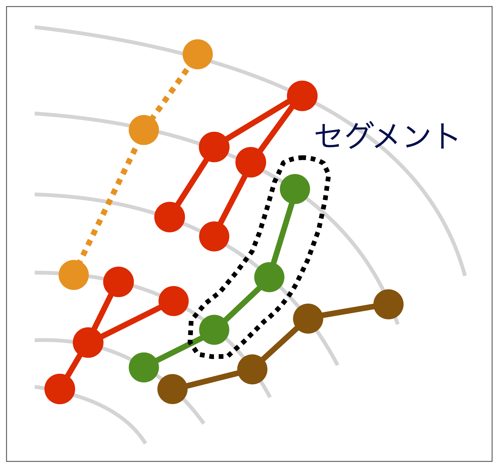

【課題】高エネルギー実験で生成された荷電粒子の飛跡を見つける
Contents
【課題】高エネルギー実験で生成された荷電粒子の飛跡を見つける¶
この課題では、変分量子固有値ソルバー法を物理実験に応用することを考えてみます。特に高エネルギー物理の実験に着目し、その必須技術である「荷電粒子飛跡の再構成」を変分量子固有値ソルバー法を使って実現することを目指します。
はじめに¶
変分量子固有値ソルバー法（Variational Quantum Eigensolver, VQE）を紹介したノートブックで、VQEの考え方と変分量子回路の基本的な実装の方法を学びました。ここでは、VQEの高エネルギー物理への応用を考えてみます。
高エネルギー実験では、高いエネルギーに加速した粒子（例えば陽子）を人工的に衝突させ、生成された多数の二次粒子を検出器で測定することで、その生成過程をつかさどる基礎物理反応を理解していきます。そのためには、検出器で測定された信号から生成粒子を同定し、そのエネルギーや運動量を正しく再構成することがとても重要です。この実習では、生成した物理反応を再構成するための最初のステップとして、「荷電粒子飛跡の再構成」をVQEで実現する方法について学んでいきます。
高エネルギー実験¶
LHC実験の概要¶

LHC（大型ハドロン加速器 Large Hadron Collider）は、スイスとフランスの国境に位置する欧州原子核研究機構（CERN）で運転されている円形の加速器です。地下約100 mに掘られた周長27 kmのトンネルの中に置かれ、6.5 TeVのエネルギーまで陽子を加速することができます（1 TeVは\(10^{12}\) eV）。その加速された陽子を正面衝突させることで、世界最高エネルギーである13 TeV での陽子衝突実験を実現しています（左上の写真）。右上の写真は、地下トンネルに設置されたLHCの写真です。
LHCでは4つの実験（ATLAS, CMS, ALICE, LHCb）が進行中ですが、その中でもATLASとCMSは大型の汎用検出器を備えた実験です（左下の写真が実際のATLAS検出器）。陽子衝突で発生した二次粒子を周囲に設置した高精度の検出器で観測することで、さまざまな素粒子反応の観測や新しい現象の探索などを行っています。右下の絵はATLAS検出器で実際に記録した粒子生成反応の一つで、これは2012年にATLASとCMSで発見されたヒッグス粒子の候補を示したものです（ヒッグス粒子は単体で測定されるわけではなく、その崩壊の結果出てきた多数の粒子を観測するのでこのように見えます）。
荷電粒子の測定¶
ATLASやCMS実験の検出器は、異なる性質を持った検出器を内側から外側に階層的に配置しています。最内層の検出器は荷電粒子の再構成や識別に使われる検出器で、実験では最も重要な検出器の一つです。この検出器はそれ自体が約10層程度の層構造を持っており、一つの荷電粒子が通過したとき、複数の検出器信号を作ります。 例えば、左下図にあるように一度の陽子衝突で無数の粒子が生成され、それらが検出器に「ヒット」と呼ばれる信号を作ります（図中の白、黄色、オレンジ等の点に相当）。このヒットの集合から「ある荷電粒子が作ったヒットの組み合わせ」を選び、その粒子の「飛跡」を再構成します。右下図のいろいろな色の曲線が飛跡に対応します。この飛跡の再構成は、ATLASやCMS実験に限らず、高エネルギー実験では最も重要な実験技術の一つと言えます。
飛跡の再構成¶
この実習で目指すのは、高エネルギー粒子の衝突で発生する荷電粒子の飛跡を再構成すること（Trackingと呼ぶ）です。ただし、現在の量子コンピュータでは大きなサイズの問題を解くことはまだ難しいため、サイズの小さい問題、つまり少数の生成粒子が生成された場合に絞って検討を行います。
まず、必要なライブラリを最初にインポートします。
# Tested with python 3.7.9, qiskit 0.23.5, numpy 1.20.1、hepqpr-qallse 0.1.0
import numpy as np
import matplotlib.pyplot as plt
from qiskit import QuantumCircuit, ClassicalRegister, QuantumRegister, Aer
from qiskit.circuit.library import TwoLocal
from qiskit.algorithms import VQE, NumPyMinimumEigensolver, NumPyEigensolver
#from qiskit_optimization.applications.ising.common import sample_most_likely
from qiskit.algorithms.optimizers import SPSA, COBYLA
from qiskit.utils import QuantumInstance
TrackMLチャレンジ¶
データとしては、2018年に行われたTrackML Particle Trackingチャレンジで提供されたオープンデータを活用します。CERNでは、将来の加速器計画として「高輝度LHC」（2027年に開始予定）と呼ばれるLHCの増強計画を進めています。高輝度LHCでは陽子の衝突頻度が現在の10倍近くに上がり、発生する2次粒子の数もそれに応じて増えるため、Trackingは非常にチャレンジングになると予想されています。それを克服するために、高輝度LHCでの実験環境を擬似的に作り、そこでの有効なTracking技術の開発を目指して行われたのがTrackMLチャレンジです。
ハミルトニアンの構成とVQEの実行¶
課題として考えるのは、Trackingを実現するためのハミルトニアンを構成し、それをVQEに実装して実行することです。
前準備¶
この課題ではTrackMLチャレンジのデータを用いますが、元のデータは扱いが難しいため、量子計算に用いやすいように前処理を行なったデータを使います。まず下図に示したように、検出器3層に渡って連続するヒットを選び出します（点線で囲まれた3層ヒットのことを、ここでは「セグメント」と呼ぶことにします）。色のついた点がヒットだと考えてください。この時検出器中心から発生した粒子を優先的に選び出せるように、セグメントが検出器中心の方を向いているものを選びます。
{kind=link}
こうして選び出したセグメントのリストを作り、そのリストから任意のペアを選んで、その相互作用の強さを考えます。この相互作用は物理的な力ではなく、二つのセグメントが同一の荷電粒子が作る飛跡とどれぐらい無矛盾なのかを表す指標だと考えてください。この指標の決め方ですが、セグメントのペアが同一飛跡に近くなるにつれ、相互作用の強さは-1に近づくように設定されています。セグメントを構成する3つのヒットのうちの1つが2つのセグメントに共有されているケース（図中で赤で示した場合に相当）は、飛跡の候補としては適切でないので相互作用は+1になっています。なぜかと言うと、赤で示したような「枝分かれ」あるいは「収束」したような飛跡というのは、今興味がある飛跡（検出器中心で発生した荷電粒子の軌道）とは矛盾しているからです。
また、図中のオレンジのようなケース（途中でヒットが抜けているようなセグメント）や茶色のケース（飛跡がジグザグしているもの）も興味のある飛跡とは言えないため、相互作用の強さは-1より大きな値に設定しています。なぜジグザグした飛跡が好ましくないかですが、一様な磁場に直交する方向に荷電粒子が入射した場合、その入射平面ではローレンツ力のせいで一定の曲率で同じ方向に粒子の軌道が曲がるからです。
以上のような理由から、この相互作用の強さは緑のケースに相当するセグメントのペアが最も-1に近くなるように決められていて、このようなペア（各セグメントの3つのヒットのうち2つが共有されていて、かつ一定の曲率で同じ方向に軌道が曲がっているペア）を選び出すことがここでの目標になります。
この段階まで処理されたデータを、data/QUBO_05pct_input.txtというファイルで提供しています。ファイルの中を見ると分かりますが、個々のセグメントは”23749_38657_45525”のような名前がついており、セグメントのペアをキーとする辞書型のデータとして格納されています（例えば、最初のデータは”(‘23749_38657_45525’, ‘23749_38657_45525’): 0.01112655792777395”となっています）。同じセグメントのペアをキーとするデータがなぜこういう値をもっているのかは、前処理に使うモデルの詳細に依るのでここでは説明を省略します（ここでの課題には影響ありません）。
問題¶
以上のデータから、VQEで用いるハミルトニアンを構成してみてください。
ヒント1：この形式のデータを以下のコードを使って読み込むとします。
file_r = 'data/QUBO_05pct_input.txt'
from ast import literal_eval
with open(file_r, "r") as f:
line = f.read()
Q = literal_eval(line)
print("Q size =",len(Q))
n_max = 100
nvar = 0
key_i = []
b_ij = np.zeros((n_max,n_max))
for (k1, k2), v in Q.items():
if k1 == k2:
b_ij[nvar][nvar] = v
key_i.append(k1)
nvar += 1
for (k1, k2), v in Q.items():
if k1 != k2:
for i in range(nvar):
for j in range(nvar):
if k1 == key_i[i] and k2 == key_i[j]:
if i < j:
b_ij[i][j] = v
else:
b_ij[j][i] = v
b_ij = b_ij[:nvar,:nvar]
print("# of segments =",nvar)
Q size = 46
# of segments = 10
セグメント数を\(N\)（上のコードではnvar）とすると、この時b_ijは\(N\)行\(N\)列の正方行列になります。実はこのデータは、QUBO（Quadratic Unconstrained Binary Optimization、2次制約無し2値最適化）と呼ばれる問題として解くことができる形式で与えられています。QUBOは量子ビット\(T\)がバイナリー値（0か1）を持つ場合に、以下の式で与えられる目的関数\(O\)を最小化する問題として定義されます。
\(T^2=T\)でもあるため、上式は簡単に
と書くこともできます。\(T\)は{0,1}のバイナリー値を持ちますが、シンプルな計算で{+1,-1}を持つ量子ビットに変換することができます。{+1,-1}はパウリ\(Z\)演算子の固有値でもあるため、パウリ\(Z\)演算子を使って目的関数\(O\)をハミルトニアンとして書くことができれば、そのまま量子回路に実装することができます。
以下のスペースに、どのような変換が可能か等を含め、VQEでTrackingを実行するために必要な量子演算を定義してください。
ヒント2：まず、{0,1}のバイナリー値を持つ\(T\)を{+1,-1}をもつスピン\(s\)に変換します。\(T=0\)を\(s=1\)、\(T=1\)を\(s=-1\)に対応させるとします。この関係の下で、目的関数\(O\)を
となるような関数\(H\)に書き換えてみてください。この関数\(H\)はイジング模型のハミルトニアンと同じ形になっています。
from qiskit.quantum_info import Pauli
from qiskit.opflow import PrimitiveOp
##################
### EDIT BELOW ###
##################
# ステップ１：{0,1}を取るTに対して定義されているb_ijを、{+1,-1}を取る変数sに対して定義しなおす。
# ステップ２：変数sをパウリZ演算子を使って実装する。
def get_qubitops(*args): # 何を引数に取り、関数で何をするか全て自由
#return ??
pass
##################
### EDIT ABOVE ###
##################
このコードの部分を課題として提出してください。
ヒント3：get_qubitopsは、パウリ\(Z\)演算子を使って実装した観測量\(H\)を返す関数です。Qiskitでパウリ\(Z\)演算子とそのテンソル積を実装するには、qiskit.quantum_info.Pauliクラス（ここを参照）とqiskit.aqua.operatorsライブラリ（ここを参照）を使うのが便利です。セグメント間の相互作用の強さを表す\(J_{ij}\)は、2つのパウリ\(Z\)演算子のテンソル積に対する係数として導入する必要があります。それをqiskit.quantum_info.Pauliを使ってどのように書くでしょうか？\(h_i\)は単一パウリ\(Z\)演算子の係数になります。そして、最終的に測定する観測量\(H\)は、それらパウリ\(Z\)演算子の線形結合になりますね。
VQEによる近似解の探索¶
上で定義したハミルトニアンを元に、VQEを使ってエネルギーの最小固有値（の近似解）を求めていきます。ただその前に、このハミルトニアンの行列を対角化して、エネルギーの最小固有値とその固有ベクトルを厳密に計算した場合の答えを出してみましょう。
# ハミルトニアンオペレータを取得
##################
### EDIT BELOW ###
##################
qubitOp = get_qubitops(...)
##################
### EDIT ABOVE ###
##################
print("")
print("total number of qubits = ",qubitOp.num_qubits)
# ハミルトニアン行列を対角化して、エネルギーの最小固有値と固有ベクトルを求める
ee = NumPyMinimumEigensolver(qubitOp)
result = ee.run()
# 最小エネルギーに対応する量子ビットの組み合わせを表示
print('Eigensolver: objective =', result.eigenvalue.real)
# sample_most_likely is deprecated and moved somewhere - under investigation
#x = sample_most_likely(result.eigenstate)
#print('Eigensolver: x =',x)
#samples_eigen = {}
#for i in range(nvar):
# samples_eigen[key_i[i]] = x[i]
xのリストで1になっている量子ビット（セグメント）が、最小エネルギーに対応するものとして選ばれているのが分かります。
次に、同じハミルトニアンモデルをVQEに実装して、最小エネルギーを求めてみます。オプティマイザーとしてSPSAあるいはCOBYLAを使う場合のコードは以下のようになります。
まず最初に、VQE用の量子回路を作ります。
# VQE用の回路を作る：ここではTwoLocalという組み込み関数を使う
seed = 10598
spsa = SPSA(maxiter=300)
cobyla = COBYLA(maxiter=500)
two = TwoLocal(qubitOp.num_qubits, 'ry', 'cz', 'linear', reps=1)
print(two)
バックエンドしてqasm_simulatorを使い、実行した結果を書き出します。
# VQEの実行
backend = Aer.get_backend('qasm_simulator')
quantum_instance = QuantumInstance(backend=backend, shots=1024, seed_simulator=seed)
vqe = VQE(qubitOp, two, spsa)
#vqe = VQE(qubitOp, two, cobyla)
result = vqe.run(quantum_instance)
# 最小エネルギーに対応する量子ビットの組み合わせを表示
print('')
print('VQE: objective =', result.eigenvalue.real)
x = sample_most_likely(result.eigenstate)
print('VQE x =',x)
samples_vqe = {}
for i in range(nvar):
samples_vqe[key_i[i]] = x[i]
おまけ¶
Trackingがうまく行っても、この答えだと0と1が並んでいるだけで面白くないですよね。正しく飛跡が見つかったかどうか目で確認するため、以下のコードを走らせてみましょう。
このコードは、QUBOを定義する時に使った検出器のヒット位置をビーム軸に垂直な平面でプロットして、どのヒットが選ばれたかを分かりやすく可視化したものです。緑の線が実際に見つかった飛跡で、青の線を含めたものが全体の飛跡の候補です。この実習では限られた数の量子ビットしか使っていないため、大部分の飛跡は見つけられていませんが、緑の線から計算に使った3点ヒットからは正しく飛跡が見つかっていることが分かると思います。
from hepqpr.qallse import *
input_path = './data/event000001000-hits.csv'
dw = DataWrapper.from_path(input_path)
# get the results
#all_doublets = Qallse.process_sample(samples_eigen)
all_doublets = Qallse.process_sample(samples_vqe)
final_tracks, final_doublets = TrackRecreaterD().process_results(all_doublets)
#print("all_doublets =",all_doublets)
#print("final_tracks =",final_tracks)
#print("final_doublets =",final_doublets)
p, r, ms = dw.compute_score(final_doublets)
trackml_score = dw.compute_trackml_score(final_tracks)
print(f'SCORE -- precision (%): {p * 100}, recall (%): {r * 100}, missing: {len(ms)}')
print(f' tracks found: {len(final_tracks)}, trackml score (%): {trackml_score * 100}')
from hepqpr.qallse.plotting import iplot_results, iplot_results_tracks
dims = ['x', 'y']
_, missings, _ = diff_rows(final_doublets, dw.get_real_doublets())
dout = 'plot-ising_found_tracks.html'
iplot_results(dw, final_doublets, missings, dims=dims, filename=dout)
提出するもの
ハミルトニアンを実装する部分のコード